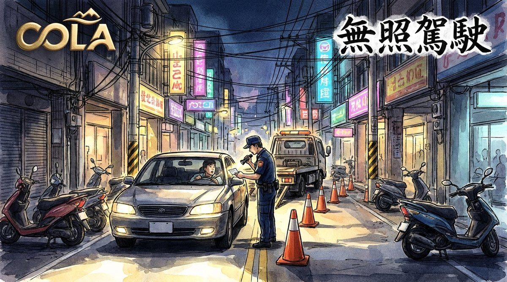

無照駕駛重罰 汽車最高6萬、當場扣車、車主連坐

可樂電子報小編/編輯
《道路交通管理處罰條例》第21條修正案於今年1月31日施行，無照駕駛罰則全面加重。交通部公路局統計，114年未成年無照駕駛約2萬件、成年無照駕駛約26萬件，顯示無照上路仍相當普遍；交通部表示，無照駕駛不僅自身風險高，也可能造成其他用路人傷亡，因此這次修法把罰鍰、扣車、講習與車主責任一起加重。

新制無照駕駛罰鍰，汽車最高6萬元、機車最高3萬6千元；10年內違規2次者，直接以最高額開罰，3次以上者在前次罰鍰基礎上每次再加罰1萬2千元，累計無上限。若因酒駕被吊扣或吊銷駕照後再無照駕駛，機車、小型車還要加罰1萬2千元。公路局強調，累犯計算期間長達10年，第2次就吃最高額，第3次起每次再加罰，目的就是讓累犯者付出更高代價。
無照駕駛一律當場移置保管車輛，不再只是開單了事。若無照駕駛肇事致人重傷或死亡，還可能沒入車輛；駕駛人未領有駕照、駕照被吊銷、註銷或吊扣期間仍上路，都屬於無照駕駛。警方指出，無照駕駛常伴隨不熟悉車輛操作、路權觀念不足，一旦發生事故，往往比一般駕駛更嚴重；民眾若發現親友無照，應勸導先考照。

車主也不能置身事外。若明知對方無照仍把車輛借出，車主將比照駕駛人罰鍰金額處罰，並吊扣車牌3個月；10年內第2次吊扣6個月，第3次以上吊扣12個月。交通局提醒，車主應善盡善良管理人責任，不要任意把車借給無照者；若車主辯稱不知情，仍須負舉證責任，警方會查明借車過程與雙方關係。
此外，所有無照駕駛違規者都要自費參加3小時道路交通安全講習，每小時收費200元，課程涵蓋道路風險辨識、考照說明與交通法令。若無正當理由不參加，可罰1,800元；經再通知仍逾期6個月未參加，汽車駕駛人吊扣駕照6個月，汽車所有人吊扣牌照6個月。公路局說，講習不是罰站，而是重新建立路權與法律責任觀念，完成後仍須依法考取駕照才能上路。

公路局表示，無照駕駛罰鍰已由原6,000元至2萬4,000元改為無上限，目的在提高嚇阻力，導正民眾錯誤駕駛觀念。警方將持續加強路檢與宣導，呼籲民眾務必考取駕照再上路，車主也應確認借車對象是否具備合法駕駛資格；警方也將結合路檢、科技執法與社區宣導，尤其針對青少年與高齡者加強提醒。
🌟 掌握花蓮在地第一手資訊・歡迎訂閱追蹤
深度紀實報導、在地精采影音專題，第一時間接收最新消息！